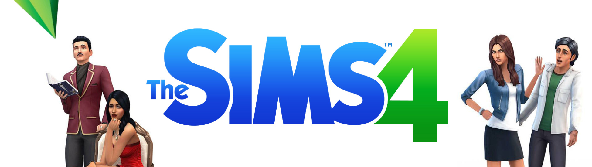
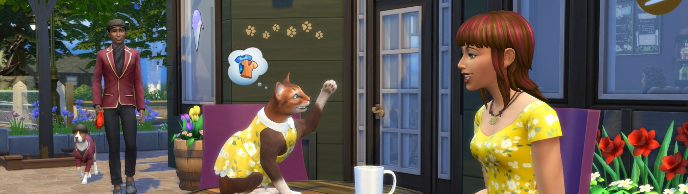

Han pasado 5 años desde la salida del último título de The Sims, años en los que ha habido expansiones semestrales y una comunidad leal que crece cada día para colocar a la franquicia como una de las más vendidas de PC. The Sims 4 está aquí con nuevas adiciones, pero también con ausencias.
Lo primero que podríamos decir es que esta entrega es diferente. Pareciera que Maxis, creadores de la franquicia, decidieron replantear la experiencia desde sus cimientos en lugar de simplemente agregar características al título anterior; esto es comprensible porque no hay elementos narrativos a los cuales someterse. Finalmente, es un sistema de juego rodeado de atributos personalizables, y son precisamente esos atributos donde se evidencia la evolución de la serie a lo largo del tiempo.
Uno de los aspectos más relevantes del juego es el nivel de personalización. El primer paso para jugar siempre ha sido la creación de personajes y en esta ocasión mejoró notablemente la herramienta para esta actividad; si bien aún tenemos un enorme catálogo de atributos faciales como orejas, labios, ojos, etc., ahora resulta más sencillo modificarlos directamente sobre el sim como si se tratara de plastilina, por lo que puedes ser mucho más detallista y preciso con las facciones de tu personaje. Algo similar ocurre con el cuerpo, pues más allá de hacerlo gordo o flaco, puedes moldear partes específicas como la barriga o el trasero.
El siguiente paso antes de salir al mundo de un sim es dotarlo de personalidad y de una meta en la vida. En ese aspecto esta entrega se asemeja a The Sims 3, pues el objetivo de tu sim ya no está condicionado a una carrera o habilidad, sino a una serie de retos a cumplir a lo largo de su existencia; hay metas de profesión como ser súper deportista, pero también sociales como tener una gran familia. Para facilitar (o dificultar) la llegada a la meta de vida los personajes cuentan con cualidades y defectos que condicionan su conducta y humor. El hecho de que al sim le gusten las computadoras, cocinar, ser social o malvado hará interesante la experiencia, ya que esas pequeñas variables agregan jugabilidad.
Cuando tu sim esté listo para salir al mundo será hora de escoger un lugar donde vivir, y es aquí donde parece que la franquicia dio un paso atrás, pues en The Sims 3 poseemos un mapa enorme para recorrer y explorar a voluntad y ahora el territorio está dividido en secciones llamadas vecindarios que pueden ser habitacionales recreativos o de servicios. En ellos hay gimnasios, centros nocturnos, bibliotecas y museos, además de un gran parque ubicado en el centro del mapa para socializar, hacer fiestas y pescar. Algo un poco molesto en un principio son las pantallas de carga que aparecen cada vez que te desplazas a un nuevo lugar; por fortuna, duran muy poco, así que eventualmente las ignoras. Si bien el juego se siente limitado en cuanto a posibilidades de desplazamiento y exploración, lo cierto es que ahora puedes visitar todos los edificios, a diferencia de antes, cuando simplemente te quedabas viendo un mapa vacío esperando que tu personaje saliera de un restaurante o una tienda.
Otro aspecto fundamental en la franquicia es la construcción: la posibilidad de tener la casa de tus sueños en el vecindario más caro de la ciudad, con cada mueble, cuadro y foco colocado a tu gusto. Aquí vemos otra enorme mejora en comparación con los antecesores de The Sims 4: todo resulta más fácil porque puedes mover cuartos enteros de lugar y modificar su tamaño y forma sin necesidad de quitar y poner de nuevo los muebles y adornos; sin embargo, la cantidad de objetos es algo limitada y al carecer de una tienda es imposible obtener más. Lamentablemente, con estas ventajas en cuanto a colocación y creación también surgen nuevas limitantes; una de las más notables es que ya no es posible elegir un color personalizado para el mobiliario, la pintura o la ropa, pues ahora las paletas de color son predeterminadas.
La principal característica con la que se publicitó el juego son los estados de ánimo, las condiciones de conducta en que los sims pueden volverse propensos a actuar de manera negativa o positiva y eso afecta el desarrollo de la historia. Los estados de ánimo son inducidos por el entorno: si el personaje tuvo un día duro en el trabajo se encontrará tenso, pero un baño de agua caliente lo relaja; si platicó sobre arte con algún desconocido, el sim podría sentirse inspirado y con ganas de pintar. Entre los deseos, que son pequeñas actividades que solicitan los sims, siempre hay uno que corresponde al estado de ánimo; concederle esos antojos mejora los resultados en las actividades y facilita conseguir su meta en la vida.
Otro de los añadidos a esta versión es la posibilidad de compartir tus creaciones de inmediato: puedes crear un personaje, una casa o hasta una habitación y subirlos al panel de comunidad para que cualquiera lo descargue, sin necesidad de instalarlo o comenzar un juego nuevo. Si tu sim está felizmente casado y su esposa sufre un accidente y muere, puedes bajar a una nueva mujer (tal vez inspirada en Scarlett Johanson) que haya sido creada por un jugador en otra parte del mundo, o simplemente agregar los sims que han hecho tus amigos e imaginar cómo sería ser compañeros de casa.
Un aspecto más que fue mejorado notablemente es la iluminación, que ahora da más profundidad a la imagen; las texturas no son realistas, pero se ajustan muy bien a la dirección de arte. La interfaz fue minimizada, por lo que todo se siente mucho más limpio, aunque los menús parecen un poco genéricos. El audio no es particularmente notable; sin embargo, la música mantiene el estilo de los juegos anteriores: es agradable sin ser intrusiva, aunque lo mejor es que si te cansa después de unas horas tienes la opción de agregar tus propias melodías.
Otro de los añadidos a esta versión es la posibilidad de compartir tus creaciones de inmediato: puedes crear un personaje, una casa o hasta una habitación y subirlos al panel de comunidad para que cualquiera lo descargue, sin necesidad de instalarlo o comenzar un juego nuevo. Si tu sim está felizmente casado y su esposa sufre un accidente y muere, puedes bajar a una nueva mujer (tal vez inspirada en Scarlett Johanson) que haya sido creada por un jugador en otra parte del mundo, o simplemente agregar los sims que han hecho tus amigos e imaginar cómo sería ser compañeros de casa.
Un aspecto más que fue mejorado notablemente es la iluminación, que ahora da más profundidad a la imagen; las texturas no son realistas, pero se ajustan muy bien a la dirección de arte. La interfaz fue minimizada, por lo que todo se siente mucho más limpio, aunque los menús parecen un poco genéricos. El audio no es particularmente notable; sin embargo, la música mantiene el estilo de los juegos anteriores: es agradable sin ser intrusiva, aunque lo mejor es que si te cansa después de unas horas tienes la opción de agregar tus propias melodías.
El título parece tener cimientos sólidos, pero los pequeños detalles nos hacen pensar que no está del todo completo. Hay pocas actividades, poco que explorar y la personalización es reducida, lo que puede compensarse un poco con el nuevo nivel de profundidad en las interacciones sociales.
The Sims 4 es una mezcla agridulce de innovaciones y limitaciones donde la balanza se inclina a favor debido a las adiciones al sistema de juego que brindan nuevas posibilidades y diversión, no importa si lo tuyo es ser astronauta o formar una bonita familia con Megan Fox.